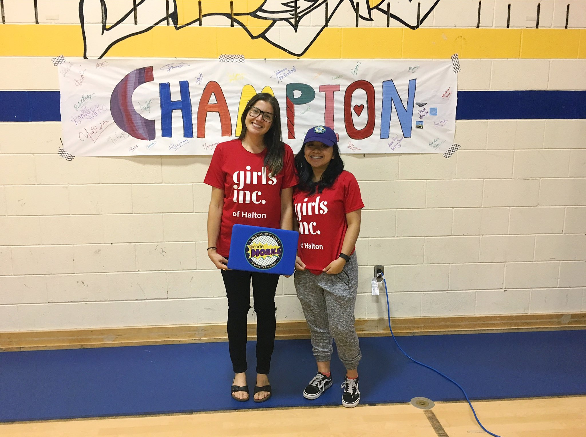
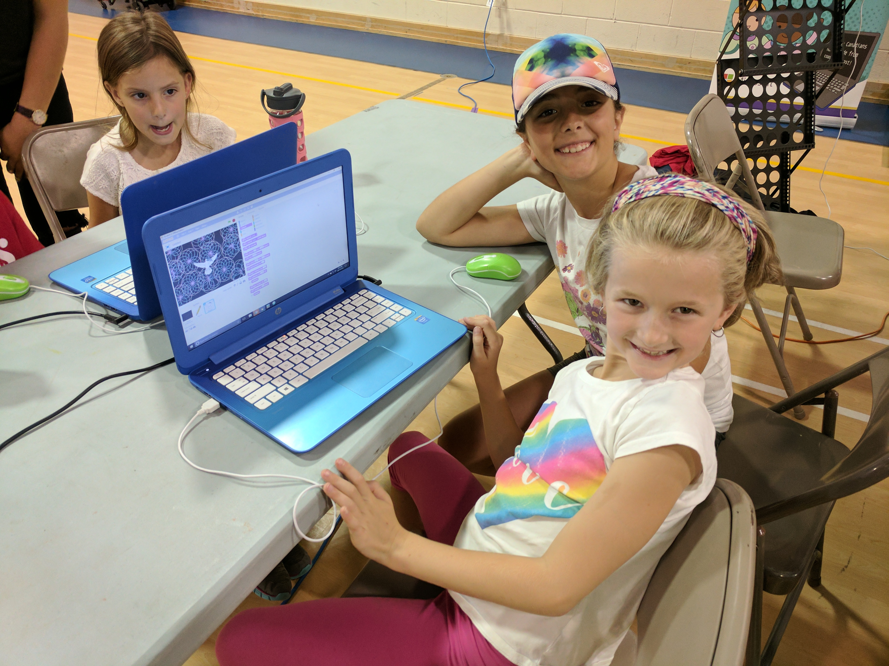
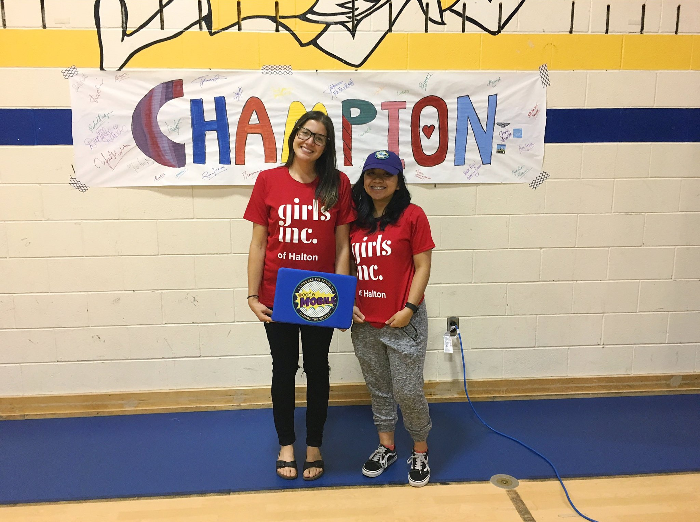
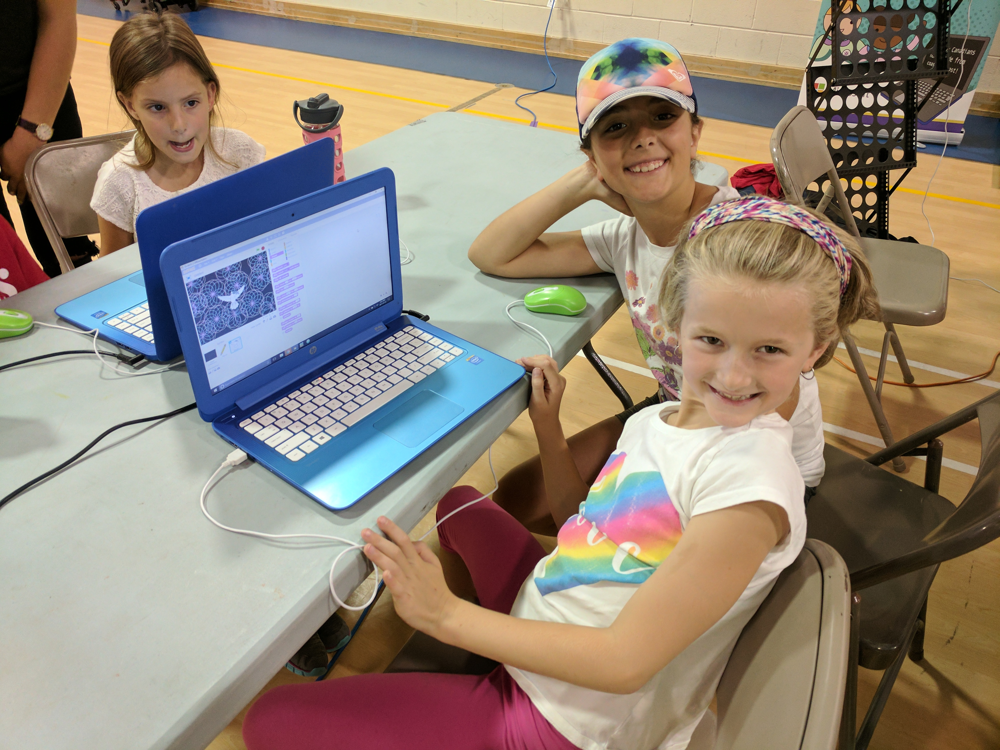
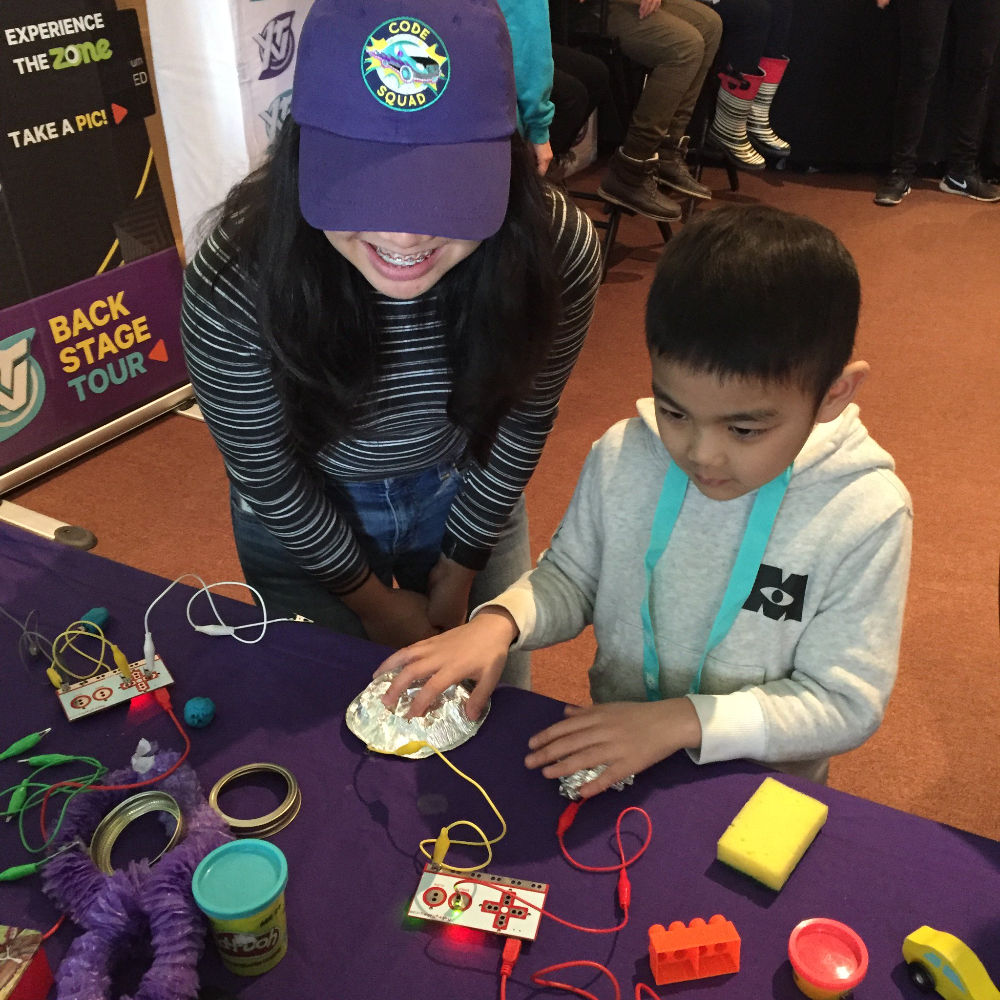

Where I work
HackerYou
Days when there are no Code Mobile trips, I spend it in the Ladies Learning Code Headquarters which is located downtown on Queen and Spadina. The Graffiti Alley is right behind the office and there are many delicious food around the area.


Code Mobile
Majority of my co-op term, I have been on the Code Mobile travelling around South-Western Ontario with the manager, Ariane, teaching kids how to code and create their own video games.
What I do
 



As a Youth Program Volunteer, it is my responsibility to create new content for future workshops, set up workshops and tech stations, encourage kids to participate, and even teach a few workshops!
Memorable Moments
Click the arrows to check out my memorable moments


What I learnt
Self-Confidence
At first I was shy to teach, but with the encouragement and assurance from my manager, I taught my first workshop. From there, I continued teaching more workshops, slowly gaining my self-confidence and ready to teach more.
Patience
As I mentored and helped children with the coding activities, I find that it is important to have patience around them. Everyone is different and unique in their own ways when it comes to their learning experience.

Communication
This experience has made me realize the importance of communication - especially towards children. Choosing the right words, and being present around them with their attention shows good communication.
Conclusion
 Overall, this co-op experience has been so fun! I really enjoyed working with Ladies Learning Code and getting to share my passion of coding and technology to others. This is truly the highlight of my summer 2017.
Copyright © 2017 by Chloe Maceda